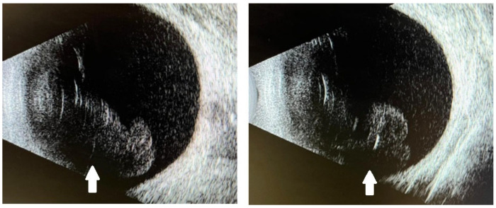
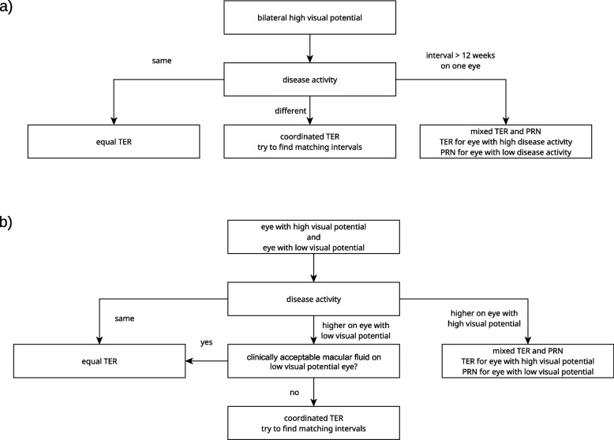
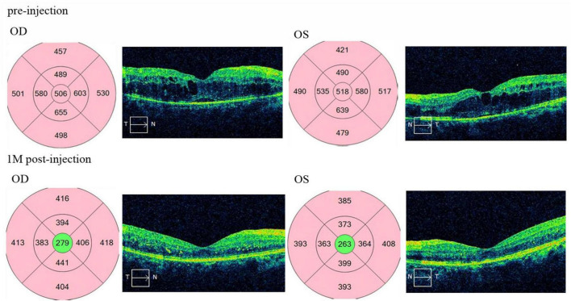

1427 — Tiêm anti-VEGF nội dịch kính HAI MẮT CÙNG NGÀY / Same-day bilateral intravitreal anti-VEGF injection
Tags: pattern:viem-tien-phong-vo-khuan pattern:viet-dich-kinh pattern:viem-noi-nhan vung:mat vung:dich-kinh vung:tien-phong protocol:anti-VEGF protocol:tiem-noi-nhan protocol:vo-khuan-hai-mat score:TER score:IOP
Mức chắc chắn (certainty): tổng hợp y văn (literature synthesis) cho phần chỉ định–an toàn–protocol, biên từ toàn văn 6 bài mở và 2 tổng quan hệ thống (2024–2026); một ca nguyên văn (verbatim case) dùng cho Blind Quiz có ảnh (PMC12736422). Các quy tắc vận hành không có trong bài gốc (thứ tự tiêm, quy tắc dừng sau mắt thứ nhất, cách ly lô thuốc) được ghi rõ suy luận (inference) tại chỗ — không có thử nghiệm ngẫu nhiên nào so sánh hai cách tiêm.
Câu chốt: Tiêm hai mắt cùng ngày không phải "hai mũi tiêm rời" mà là một buổi can thiệp có hai cơ quan đích: (1) nguy cơ nhân đôi cho từng mắt, (2) nguy cơ chia sẻ nguồn nhiễm (lọ thuốc, bơm tiêm, người tiêm, lô pha chế) → mù hai mắt trong một lần, và (3) gấp đôi liều toàn thân trong cùng một ngày. Dữ liệu hiện có (69.239 buổi tiêm hai mắt, 0 ca viêm nội nhãn hai bên) cho thấy thủ thuật an toàn trong tay người làm đúng quy trình — nhưng chính vì biến cố hiếm, quyết định phải dựa trên cấu trúc nguy cơ chứ không dựa vào "chưa thấy ca nào".
1. Tổng quan — vì sao "hai mắt cùng ngày" là bài toán khác, không phải 2 lần tiêm gộp
1.1. Vì sao nhu cầu có thật: bệnh hai mắt + gánh nặng tái khám
- Thoái hóa hoàng điểm tuổi già (age-related macular degeneration, AMD) thể tân mạch hai bên rất phổ biến: ước tính ≥ 30% ở châu Á và 45% ở châu Âu; 26% bệnh nhân AMD một bên sẽ xuất hiện tân mạch hắc mạc (choroidal neovascularization, CNV) ở mắt đối diện trong 5 năm (PMC3913980).
- Với phác đồ 4 tuần/mũi (treat-and-extend khởi đầu), mỗi mắt cần 13 mũi/năm; tiêm rời hai mắt = 26 buổi/năm cho một bệnh nhân thường > 70 tuổi, nhiều người không tự đi lại được. Tiêm hai mắt cùng ngày đưa về 13 buổi/năm — đây là động lực thực hành chính, và cũng là lý do thủ thuật được làm rộng rãi dù nằm ngoài nhãn (off-label): các thử nghiệm then chốt đều chỉ tiêm một mắt (PMC12351889).
- Hệ quả ngược cần nhớ: giảm số buổi không được phép làm giảm số mũi của mắt đang hoạt động bệnh — xem mục 4.3 (phối hợp khoảng cách treat-and-extend).
1.2. Vật lý – dược động: 0,05 mL mỗi mắt nhưng một tuần hoàn chung
- Thể tích: một mũi anti-VEGF chuẩn là 0,05 mL (ranibizumab 0,5 mg; aflibercept 2 mg; bevacizumab 1,25 mg) vào thể tích dịch kính ~4 mL → pha loãng ~1:80 trong mắt. Tiêm hai mắt không làm tăng nồng độ trong một mắt, nhưng làm tăng gấp đôi lượng thuốc vào tuần hoàn vì mỗi mắt đều thoát thuốc qua lưới bè – tĩnh mạch thượng củng mạc và qua hàng rào máu–võng mạc bị phá vỡ.
- Phân tử quyết định mức phơi nhiễm toàn thân (chi tiết ở 1424, nguồn PMC12271010):
- Bevacizumab — kháng thể toàn phần 149 kDa, có Fc → nửa đời huyết tương ~21 ngày, phơi nhiễm toàn thân cao nhất.
- Aflibercept — protein dung hợp 115 kDa, có Fc → ức chế VEGF huyết thanh trên IC50 tới 30 ngày.
- Ranibizumab — mảnh Fab 48 kDa, không Fc → nửa đời ~0,25 ngày, phơi nhiễm thấp nhất.
- FcRn tái chế IgG → phân tử có Fc lưu lâu hơn; tiêm hai mắt cùng lúc nghĩa là đỉnh huyết thanh gấp đôi ở cùng một thời điểm, không phải hai đỉnh cách nhau vài tuần.
- Bằng chứng trực tiếp — và một kết quả đi ngược trực giác: ở 20 bệnh nhân tiêm bevacizumab hai mắt so với 20 bệnh nhân tiêm một mắt, VEGF huyết thanh (pg/mL) giảm từ 235,75 ± 183,16 → 153,88 ± 113,26 (hai mắt) và 252,53 ± 233,52 → 189,42 ± 251,72 (một mắt) sau 1 tháng; khác biệt giữa hai nhóm p = 0,771 (PMC3913980). Nghĩa là liều gấp đôi KHÔNG cho mức ức chế VEGF huyết thanh gấp đôi — phù hợp với bão hòa thải trừ/dung lượng đích.
- Phản biện (bắt buộc): n = 20 + 20, bevacizumab, thời điểm 1 tháng, không đủ lực cho biến cố lâm sàng; một nghiên cứu không chứng minh "an toàn toàn thân", chỉ chứng minh không có bùng nổ ức chế VEGF trong mẫu nhỏ.
- Vì sao vẫn phải coi trọng phơi nhiễm toàn thân: huyết áp, protein niệu và biến cố huyết khối–tim mạch là phụ thuộc tổng liều – thời gian; bệnh nhân tiêm hai mắt thường là người đã tiêm nhiều năm. Đây là lý do phải đo huyết áp và xét nghiệm nước tiểu định kỳ như bài 1424, không phải chỉ vì "hôm nay tiêm 2 mũi".
1.3. Ba nguồn nguy cơ của một buổi tiêm hai mắt
| Nguồn nguy cơ | Cơ chế | Hệ quả lâm sàng | Cách chặn |
|---|---|---|---|
| Nhân đôi nguy cơ mỗi mắt | Hai lần chọc kim, hai lần đặt speculum, hai lần povidone-iodine | Viêm nội nhãn một mắt tăng gấp đôi theo buổi (2 × 0,03–0,08% ≈ 0,06–0,16%/buổi) | Kỹ thuật vô khuẩn giống hệt nhau cho từng mắt, không "tiêm nhanh cho xong" |
| Chia sẻ nguồn nhiễm | Cùng lọ thuốc, cùng lô pha chế, cùng khay dụng cụ, cùng người tiêm | Nếu lọ/lô nhiễm → cả hai mắt viêm nội nhãn trong cùng 24–72 giờ = mù hai bên | Mỗi mắt bơm tiêm/kim riêng; ưu tiên lọ riêng hoặc lọ đơn liều; nghi ngờ → cách ly lô + báo dược |
| Gấp đôi liều toàn thân | Hai mắt cùng hấp thu vào tuần hoàn | Đỉnh ức chế VEGF toàn thân cao hơn, kéo dài hơn | Tầm soát tim mạch–thận trước; cân nhắc ranibizumab (không Fc) ở người nguy cơ cao |
- Con số nền để không hoảng loạn: viêm nội nhãn sau tiêm nội nhãn 0,02–0,2%/mũi (bài 1425); tổng quan hệ thống riêng cho tiêm hai mắt cùng ngày: 138.478 mũi = 69.239 buổi, 7.579 bệnh nhân, 33 ca viêm nội nhãn, 0 ca hai bên (Int Ophthalmol 2024, PMID 38332399).
- Con số nền để không chủ quan: 69.239 buổi là chưa đủ để loại trừ một biến cố có tần suất 1/100.000 buổi; khoảng tin cậy của "0 ca" vẫn cho phép vài ca/một triệu buổi, và ca hai bên đã được báo cáo riêng lẻ trong y văn.
2. Mẫu hình + chẩn đoán phân biệt theo thời điểm sau tiêm hai mắt
Mẫu hình cần nhận ra: hai mắt cùng triệu chứng, cùng thời điểm khởi phát, sau một buổi tiêm chung. Thời gian khởi phát là biến số mạnh nhất — mạnh hơn mức độ viêm.
- < 30 phút (ngay tại phòng tiêm): tăng nhãn áp cấp do thể tích 0,05 mL ± chèn ép củng mạc (đau, nhìn mờ, thấy quầng); xuất huyết dưới kết mạc (đỏ, không đau, không giảm thị lực); xước giác mạc do speculum (đau, chảy nước mắt, fluorescein +); phản ứng vasovagal.
- 12–48 giờ: viêm nội nhãn vô khuẩn/độc (sterile/toxic) — dạng TASS-like sau tiêm: viêm tiền phòng hai bên đối xứng, kết mạc yên tĩnh, đau ít, không mủ đặc, cấy âm, đáp ứng corticoid tại chỗ.
- 1–4 ngày: viêm nội nhãn vô khuẩn muộn hơn (thường gặp sau aflibercept 8 mg: 3,7%/mũi, 12,2%/bệnh nhân trong loạt 41 bệnh nhân/136 mũi) vs viêm nội nhãn nhiễm khuẩn (đau nhiều, mủ tiền phòng, viêm dịch kính tăng nhanh) — đây là ngã ba quyết định của cả bài.
- 5–14 ngày: nhiễm khuẩn chậm (Staphylococcus coagulase âm), viêm màng bồ đào bùng phát, bong võng mạc (hiếm, thường một mắt).
- > 2 tuần: nấm, Cutibacterium acnes, viêm nội nhãn muộn quanh implant, đục bao sau tiến triển, tăng nhãn áp kéo dài (bài 1404).
Gamut theo tính đối xứng — mẹo định hướng trước khi có cấy:
- Đối xứng hoàn toàn hai mắt + kết mạc yên + đau ít → nghiêng về thuốc/lô/phản ứng miễn dịch (vô khuẩn).
- Một mắt nặng hơn rõ + mủ tiền phòng + đau tăng theo giờ → nghiêng về nhiễm khuẩn (dù mắt kia cũng viêm nhẹ do phản ứng chéo hoặc do cùng lô).
- Hai mắt nặng như nhau, khởi phát < 24 giờ, cùng lô, đau nhiều, mủ đặc → phải coi là nhiễm khuẩn từ lọ/lô cho tới khi loại trừ: cấy cả hai mắt, kháng sinh nội nhãn cả hai mắt, cách ly lô.
3. Bảng so sánh phân biệt (ma trận đối chiếu)
| Thực thể (entity) | Hình ảnh/lâm sàng điển hình | Chốt vào (rule-in) | Chốt loại (rule-out) | Gợi ý xác nhận |
|---|---|---|---|---|
| Viêm nội nhãn vô khuẩn sau tiêm (sterile/toxic IOI) | Hai mắt đối xứng, viêm tiền phòng 1–4+, viêm dịch kính nhẹ–vừa, kết mạc yên, đau ít, khởi phát 1–4 ngày | Đối xứng hai bên + không đau + cấy âm + giảm nhanh trong 24–72 giờ với corticoid tại chỗ | Mủ đặc, đau tăng, một mắt nặng hơn, cấy dương → nhiễm khuẩn | Đèn khe, B-scan (vôi hóa dịch kính), cấy khi không điển hình |
| Viêm nội nhãn nhiễm khuẩn | Đau nhiều, mủ tiền phòng, viêm dịch kính đặc, thị lực giảm nhanh, 1–7 ngày | Mủ + đau + tiến triển theo giờ; cùng lô → hai mắt | Hai mắt đối xứng, không đau, tự giảm → vô khuẩn | Chọc tiền phòng/dịch kính trước kháng sinh, cấy + nhuộm Gram |
| TASS sau tiêm (độc tố nội nhãn) | 12–48 giờ, viêm tiền phòng lan tỏa, không viêm dịch kính sâu, nhiều ca cùng lô | Nhiều bệnh nhân cùng ngày/cùng lô + cấy âm + đáp ứng corticoid | Có viêm dịch kính đặc, mủ khu trú → nhiễm khuẩn | Điều tra lô, đối chiếu các ca trong ngày |
| Tăng nhãn áp cấp sau tiêm | Đau, nhìn mờ, IOP tăng ngay, giác mạc hơi phù, tiền phòng sâu | IOP đo được tăng ngay sau tiêm, giảm sau khi giải phóng dịch kính/ thuốc hạ áp | IOP bình thường → tìm nguyên nhân khác | Đo IOP cả hai mắt trước khi cho về |
| Xuất huyết dưới kết mạc | Đỏ khu trú, không đau, không giảm thị lực, tự hết 1–2 tuần | Đỏ + thị lực không đổi + tiền phòng trong | Đau + mủ + viêm dịch kính → không phải | Đèn khe |
| Bong võng mạc sau tiêm | Bóng/ruồi bay, mất thị trường, B-scan: màng tăng hồi âm di động | Khiếm khuyết thị trường tương ứng + B-scan màng di động | B-scan bình thường, triệu chứng thoáng qua | B-scan, soi đáy mắt khi môi trường trong |
| Viêm màng bồ đào bùng phát (đợt cấp bệnh nền) | Tiền sử VKH/uveitis, hai mắt nhưng không đối xứng, không mủ | Tiền sử + đáp ứng corticoid toàn thân + không liên quan lô | Khởi phát đúng 1–4 ngày sau tiêm, đối xứng → nghiêng vô khuẩn | Tiền sử, OCT hắc mạc (dày), đáp ứng điều trị |

B-scan hai mắt của ca viêm nội nhãn vô khuẩn hai bên sau tiêm aflibercept 8 mg cùng ngày: võng mạc áp, đục dịch kính đối xứng (mũi tên trắng). Đây là hình ảnh "chốt loại" bong võng mạc và là dấu hiệu gợi ý thuốc/lô hơn là nhiễm khuẩn một mắt. Nguồn: Reports 2025 (PMC12736422), CC BY 4.0; dùng nguyên bản.3.1. Ba câu hỏi đọc ảnh theo thứ tự (dùng cho mọi ca hai mắt)
- Võng mạc có áp không? (B-scan: màng tăng hồi âm di động = bong; đục dịch kính đối xứng = viêm) — bỏ sót bong võng mạc là sai lầm nặng nhất vì mổ khác hoàn toàn.
- Viêm nằm ở đâu? (tiền phòng đơn thuần + không viêm dịch kính sâu → TASS/vô khuẩn; viêm dịch kính đặc + mủ → nhiễm khuẩn).
- Hai mắt có đối xứng không? (đối xứng + kết mạc yên + đau ít → thuốc/lô; bất đối xứng → một mắt).
4. Protocol + hệ phân độ: quyết định, kỹ thuật, phối hợp treat-and-extend, theo dõi
4.1. Cây quyết định "có tiêm hai mắt cùng ngày không"
flowchart TD
A[Bệnh hai mắt, cả hai cần anti-VEGF] --> B{Có chống chỉ định phía bệnh nhân?}
B -->|Có| Z[Tiêm rời: mắt nặng trước, mắt kia sau 1-2 tuần]
B -->|Không| C{Mắt thứ hai có chỉ định thật trong hôm nay?}
C -->|Không| Z
C -->|Có| D{Cùng lọ và cùng khay dụng cụ?}
D -->|Có| E[Đổi: mỗi mắt bơm tiêm và kim riêng, ưu tiên lọ riêng]
D -->|Không| F[Tiêm mắt nặng hơn trước]
E --> F
F --> G[Đánh giá ngay sau mắt 1]
G --> H{Biến cố ở mắt 1?}
H -->|Có| I[DỪNG: không tiêm mắt 2, xử trí biến cố]
H -->|Không| J[Tiêm mắt 2 như một thủ thuật riêng]
J --> K[Đo IOP và soi đèn khe cả hai mắt trước khi về]
- Chống chỉ định/hoãn (mục 4.5) là cửa đầu tiên — không phải bước cuối.
4.2. "Hai mắt = hai thủ thuật riêng": danh mục bắt buộc
| Hạng mục | Mắt 1 | Mắt 2 | Vì sao (cơ chế) |
|---|---|---|---|
| Povidone-iodine | 5% (hoặc 2,5%) vào cùng đồ kết mạc, ≥ 30 giây | Lặp lại đầy đủ, không dùng lại gạc | PVP-I là yếu tố dự phòng duy nhất có bằng chứng nhất quán; giảm nồng độ/nửa vời làm mất tác dụng |
| Speculum, khay, gạc | Bộ riêng | Bộ mới | Tránh mang vi khuẩn từ mắt 1 sang mắt 2 |
| Găng tay | Vô khuẩn | Thay găng | Cùng lý do |
| Bơm tiêm/kim | Mới | Mới | Kim cùn + nhiễm khuẩn từ mắt 1 |
| Lọ thuốc | Lọ A | Lọ A hoặc B — nếu dùng chung: không chạm đầu kim vào lọ, thao tác một lần | Lọ chung là nguồn nhiễm chung duy nhất có thể làm cả hai mắt nhiễm |
| Thứ tự | Mắt nặng hơn / cần điều trị hơn | Mắt còn lại | Nếu mắt 1 có biến cố, mắt 2 chưa bị ảnh hưởng — quy tắc dừng (suy luận) |
| Kiểm tra sau tiêm | IOP, đếm ngón tay, soi đèn khe | Lặp lại | Tăng IOP và xước giác mạc xảy ra ngay, không chờ hôm sau |
- Không dùng kháng sinh dự phòng tại chỗ sau tiêm: loạt 21.339 mũi cho thấy 5,3 vs 4,4/10.000, không có ý nghĩa (bài 1425, PMC12057116).
- Dữ liệu về "một lọ cho hai mắt" còn mỏng: loạt 34 bệnh nhân/102 mũi tiêm hai mắt từ một lọ cho DME không ghi nhận biến chứng nặng (PMC12589019) — nhưng đây là case series nhỏ, một trung tâm, không đủ để coi "dùng chung lọ" là an toàn phổ quát. Suy luận: nguyên tắc là giảm số lần chọc vào lọ, không phải "chứng minh an toàn".
4.3. Phối hợp khoảng cách treat-and-extend (TER) — 4 kiểu và khi nào chọn

Sơ đồ của loạt 428 bệnh nhân/15.825 mũi: (a) hai mắt tiềm năng thị lực cao — hoạt độ giống nhau → equal TER, khác nhau → coordinated TER, một mắt cần > 12 tuần → mixed TER + PRN; (b) hai mắt khác tiềm năng thị lực — quyết định theo việc dịch hoàng điểm ở mắt tiềm năng thấp có chấp nhận được hay không. Nguồn: BMC Ophthalmology 2025 (PMC12351889), CC BY-NC-ND 4.0; ảnh nguyên bản, không chỉnh sửa.| Kiểu phối hợp | Cách làm | Chọn khi | Cạm bẫy |
|---|---|---|---|
| Equal TER | Hai mắt cùng khoảng, tiêm chung mỗi lần | Hoạt độ bệnh giống nhau, tiềm năng thị lực giống nhau | Kéo dài khoảng theo mắt "tốt" → mắt nặng tái phát |
| Coordinated TER | Khoảng khác nhưng khớp (vd 4 và 8 tuần → tiêm chung mỗi 8 tuần) | Hoạt độ hơi khác, cả hai tiềm năng cao | Mắt 4 tuần bị thiếu mũi nếu không có buổi bù |
| Mixed TER + PRN | Mắt hoạt động TER, mắt kia theo dõi + tiêm khi cần | Một mắt cần > 12 tuần, mắt kia ngắn hơn | Bỏ sót tái phát ở mắt PRN vì không chụp OCT mỗi lần |
| Async TER | Hai mắt độc lập hoàn toàn | Sau khi cố phối hợp thất bại hoặc bệnh rất khác nhau | Quay lại gánh nặng 2 buổi/tháng — mất lợi ích ban đầu |
- Con số thực hành: trong loạt trên, 4.766 buổi tiêm hai mắt so với 6.293 mũi tiêm một mắt trong cùng nhóm bệnh nhân; 158/428 (36,9%) phải ngừng tiêm hai mắt trong 5 năm (lý do: chuyển nơi điều trị 9,5%, bệnh/nhập viện hoặc tử vong 10,9%, mất theo dõi 4,4%, bệnh nhân từ chối 3,2%) (PMC12351889).
4.4. An toàn đo được — đọc đúng mẫu số
| Nguồn | Thiết kế | Liều lượng | Biến cố chính |
|---|---|---|---|
| BMC Ophthalmol 2025 (PMC12351889) | Hồi cứu 428 bệnh nhân/856 mắt, 5 năm | 4.766 buổi hai mắt + 6.293 mũi một mắt | Viêm nội nhãn 1/15.825 mũi (0,0063%), 0 ca hai bên; xuất huyết dưới kết mạc 49 vs 33; khô mắt 93 vs 85; tăng IOP 11 vs 8; viêm màng bồ đào trước 5 vs 6; đột quỵ 3 vs 3, nhồi máu cơ tim 2 vs 1, tử vong 13 vs 10; biến cố thuyên tắc động mạch 0,0632 |
| Clin Ophthalmol 2020 (PMC7567572) | Hồi cứu 323 bệnh nhân/646 mắt | 1.418 buổi hai mắt | 0 viêm nội nhãn; xuất huyết dưới kết mạc 22; tăng IOP thoáng qua 17; 21 ca viêm nội nhãn vô khuẩn, hết trong 2 tuần |
| Pak J Med Sci 2022 (PMC9676582) | So sánh trong một trung tâm | 15.338 mũi hai mắt/30.258 mũi | Viêm nội nhãn 4/30.258 (0,013%); sau tiêm hai mắt 1/15.338 (0,0065%) |
| Ophthalmol Ther 2025 (PMC12270979) | Hồi cứu 50 bệnh nhân/100 mắt, faricimab | 487 mũi hai mắt | 0 viêm nội nhãn, 0 biến cố tim mạch–thuyên tắc, 5 bệnh nhân (10%) vấn đề nhỏ |
| BMC Ophthalmol 2026 (PMC13147599) | Hồi cứu 95 bệnh nhân/190 mắt, implant dexamethasone | 293 lần đặt hai mắt cùng ngày | IOP ≥ 25 mmHg 7 mắt (3,6%); đục thể thủy tinh cần mổ 41 mắt (21,6%); bong võng mạc 3 (1,6%); 0 viêm nội nhãn |
| Tổng quan hệ thống 2024 (PMID 38332399) | 17 nghiên cứu | 69.239 buổi/138.478 mũi, 7.579 bệnh nhân | 33 ca viêm nội nhãn, 0 ca hai bên; tần suất 0–0,53%/mũi |
| Tổng quan hệ thống 2024 (PMID 38194112) | 7 nghiên cứu | 6.703 buổi/13.406 mũi, 689 bệnh nhân | 2 biến cố tim không tử vong/12.964 mũi; 12 tử vong/6.233 buổi |
- Cách đọc bảng này (quan trọng hơn số): các loạt không có nhóm chứng ngẫu nhiên, không đủ lực cho biến cố hiếm, và mẫu số khác nhau (mũi vs buổi). Kết luận trung thực: "không thấy tăng biến cố có ý nghĩa" ≠ "đã chứng minh an toàn".
- Ngưỡng theo dõi tại chỗ: đo IOP cả hai mắt trước khi về; dặn bệnh nhân quay lại ngay nếu đau tăng, thị lực giảm, hoặc mủ; khám lại 1–3 ngày ở người một mắt độc nhất, đái tháo đường kiểm soát kém, suy giảm miễn dịch.
4.5. Khi nào KHÔNG tiêm hai mắt cùng ngày (ma trận quyết định)
| Tình huống | Chốt vào (rule-in) để hoãn/tiêm rời | Chốt loại (rule-out) — vẫn tiêm hai mắt được | Gợi ý xác nhận |
|---|---|---|---|
| Mắt độc nhất (chỉ còn một mắt thấy) | Mắt còn lại đếm ngón tay hoặc kém hơn, mắt kia là mắt duy nhất | Hai mắt đều còn thị lực hữu ích và bệnh nhân hiểu nguy cơ | Hỏi thị lực mắt kia, xác nhận bằng hồ sơ |
| Nhiễm trùng bề mặt đang hoạt động | Viêm bờ mi, viêm kết mạc mủ, lẹo, dacryocystitis cùng bên | Chỉ khô mắt, viêm bờ mi nhẹ mạn đã điều trị | Đèn khe, ấn túi lệ |
| Tiền sử viêm nội nhãn/viêm nội nhãn vô khuẩn | Đã từng viêm nội nhãn hoặc IOI sau tiêm (nhất là sau aflibercept 8 mg) | Chưa từng, và đã dung nạp cùng thuốc ≥ 3 mũi | Hồ sơ tiêm, loại thuốc – lô |
| Không thể tái khám/không tuân thủ | Không có người đưa đi, ở xa, không liên lạc được | Có người chăm sóc, có điện thoại, khoảng cách hợp lý | Hỏi trực tiếp, ghi hồ sơ |
| Suy giảm miễn dịch nặng/đang nhiễm khuẩn toàn thân | Bạch cầu hạt < 1.000/mm³, sốt đang hoạt động | Đái tháo đường kiểm soát, HIV ổn định | Công thức máu, hỏi sốt |
| Lô thuốc mới/pha chế tại chỗ chưa dùng | Lô đầu tiên, không rõ nguồn pha chế | Lọ thương mại đóng sẵn, đã dùng cho mắt khác trong ngày không biến cố | Đối chiếu số lô, ngày pha |
5. Biến thể bình thường và cạm bẫy
- Cạm bẫy 1 — "hai mắt viêm = nhiễm khuẩn hai mắt". Ngược lại mới đúng trong phần lớn ca: đối xứng + kết mạc yên + đau ít nghiêng về vô khuẩn/thuốc. Ca nguyên văn: bệnh nhân 89 tuổi sau tiêm aflibercept 8 mg hai mắt, ngày 4 nhập viện với thị lực 20/63 → 20/125 (OD) và 20/200 → 20/400 (OS), tiền phòng 4+ tế bào, dịch kính 2+ tế bào, 3+ haze, B-scan võng mạc áp + đục dịch kính đối xứng; điều trị corticoid tại chỗ + kháng sinh + liệt thể mi, hết hoàn toàn trong 4 ngày, thị lực về nền (PMC12736422).
- Cạm bẫy 2 — "đối xứng thì chắc chắn vô khuẩn". Lọ/lô nhiễm cho hai mắt gần như cùng lúc; nếu đau nhiều + mủ đặc + xấu đi trong 24–48 giờ, phải cấy cả hai mắt và tiêm kháng sinh nội nhãn cả hai mắt, đồng thời cách ly lô và báo dược. Bỏ sót ở đây là mù hai bên trong vài ngày.
- Cạm bẫy 3 — nhầm "mũi" với "buổi". 0,03–0,08% là mỗi mũi; một buổi hai mắt là 2 mũi → nguy cơ mỗi buổi gấp đôi. Khi tư vấn, nói nguy cơ mỗi buổi, không nói "mỗi mũi" (bệnh nhân hiểu sai là "một lần tiêm").
- Cạm bẫy 4 — coi B-scan là đủ. Trong viêm dịch kính đặc, B-scan không loại trừ bong võng mạc và không phân biệt mủ với fibrin; nếu nghi bong, phải soi đáy mắt khi môi trường cho phép hoặc cắt dịch kính chẩn đoán.
- Cạm bẫy 5 — "cùng lọ cho tiện". Không có bằng chứng đủ mạnh; nguy cơ nhiễm chung là nguy cơ hai mắt. Dùng bơm tiêm đóng sẵn khi có (RR viêm nội nhãn 0,32 so với lọ đa liều — bài 1425).
- Cạm bẫy 6 — quên rằng đây là chỉ định off-label. Phải giải thích – đồng ý – ghi hồ sơ; không được biến "tiện cho phòng tiêm" thành chỉ định y khoa.
- Biến thể bình thường: xuất huyết dưới kết mạc hai bên (đỏ, không đau) và tăng IOP thoáng qua sau tiêm (thường tự hết trong 30 phút) không phải biến cố — đừng leo thang điều trị, nhưng phải đo IOP để phân biệt với tăng nhãn áp thật.
6. Tự lượng giá — Blind Quiz
Ca 1 — Cụ bà 89 tuổi, AMD tân mạch hai mắt, tiêm aflibercept 8 mg hai mắt cùng ngày. Ngày thứ 4: nhìn mờ hai mắt, đau nhẹ.
- Gợi ý lâm sàng: thị lực 20/63 → 20/125 (OD), 20/200 → 20/400 (OS); kết mạc yên; tiền phòng 4+ tế bào; dịch kính 2+ tế bào, 3+ haze; IOP bình thường.
- Câu hỏi: (1) Mô tả dấu hiệu trên B-scan? (2) Ba chẩn đoán phân biệt? (3) Dấu hiệu nào chốt hướng vô khuẩn, và bước tiếp theo?
Bấm để hiện đáp án (findings + chẩn đoán)
- Dấu hiệu: võng mạc áp ở cả hai mắt, đục dịch kính đối xứng (mũi tên trắng), không có màng co kéo, không có bong.
- Chẩn đoán: viêm nội nhãn vô khuẩn hai bên sau aflibercept 8 mg (ca nguyên văn). Phân biệt: (1) viêm nội nhãn nhiễm khuẩn (đau nhiều, mủ đặc, xấu nhanh); (2) TASS/độc tố (12–48 giờ, nhiều ca cùng lô); (3) bùng phát viêm màng bồ đào nền.
- Chốt vô khuẩn: đối xứng hai bên + kết mạc yên + đau nhẹ + tiền sử đã dung nạp aflibercept 2 mg; xử trí corticoid tại chỗ + kháng sinh + liệt thể mi, hết trong 4 ngày. Nếu mủ đặc, đau tăng, một mắt nặng hơn → đổi hướng sang nhiễm khuẩn: cấy + kháng sinh nội nhãn cả hai mắt.
- Nguồn ảnh: Reports 2025 (PMC12736422), CC BY 4.0.
Ca 2 — Nam 38 tuổi, đái tháo đường 5 năm kiểm soát kém, phù hoàng điểm hai mắt. Tiêm anti-VEGF hai mắt cùng ngày, cùng một lọ.

- Gợi ý: thị lực 47 chữ (OD), 52 chữ (OS); OCT: phù lan tỏa + nang + dịch dưới võng mạc, DRIL, EZ gián đoạn từng điểm.
- Câu hỏi: (1) Độ dày trung tâm hoàng điểm thay đổi thế nào? (2) Đây có phải bằng chứng "an toàn" cho việc dùng chung lọ? (3) Điều gì còn thiếu để kết luận?
Bấm để hiện đáp án (findings + chẩn đoán)
- Dấu hiệu: OCT trước tiêm dày hoàng điểm hai bên (trung tâm 655 µm OD, 639 µm OS trong hình); 1 tháng sau còn 279 µm OD, 263 µm OS, hết nang, hút dịch dưới võng mạc, cấu trúc lớp trong hồi phục; thị lực 76 chữ (OD), 80 chữ (OS).
- Chẩn đoán: phù hoàng điểm đái tháo đường hai bên, đáp ứng tốt với tiêm đồng thời từ một lọ (n = 34 bệnh nhân/102 mũi, so với 93 bệnh nhân/210 mũi tiêm một mắt; +8,0 vs +5,5 chữ, p = 0,009).
- Phản biện: case series hồi cứu, một trung tâm, không đối chứng ngẫu nhiên; "không có biến chứng nặng" trong 102 mũi không chứng minh dùng chung lọ an toàn — nguy cơ nhiễm chung là nguy cơ hai mắt, nên nguyên tắc vẫn là giảm thao tác chạm vào lọ và ưu tiên bơm tiêm đóng sẵn.
- Nguồn ảnh: Front Med 2025 (PMC12589019), CC BY.
Ca 3 — Bệnh nhân AMD hai mắt: mắt phải 4 tuần/mũi, mắt trái 8 tuần/mũi, cả hai còn tiềm năng thị lực tốt. Lên lịch thế nào?
- Câu hỏi: Chọn kiểu phối hợp nào? Nếu mắt trái đang êm nhưng mắt phải còn dịch thì xử trí ra sao?
Bấm để hiện đáp án
- Coordinated TER: giữ mắt phải 4 tuần, mắt trái 8 tuần, tiêm chung mỗi 8 tuần và tiêm bù mắt phải ở giữa kỳ — hoặc chấp nhận kéo dài mắt trái để đồng bộ, chỉ khi mắt trái không tái phát.
- Nguyên tắc: không hy sinh mắt đang hoạt động để có lịch đẹp; nếu mắt phải còn dịch, ưu tiên mắt phải và dùng mixed TER + PRN cho mắt trái.
- Nguồn sơ đồ: BMC Ophthalmology 2025 (PMC12351889), CC BY-NC-ND 4.0.
Bài liên quan chéo
- 1424 – Tăng huyết áp & biến cố tim mạch–thận toàn thân sau tiêm anti-VEGF (liều toàn thân, chọn phân tử theo Fc)
- 1425 – Viêm nội nhãn sau tiêm nội nhãn (0,033–0,081%/mũi; vô khuẩn vs nhiễm; EVS)
- 1426 – Viêm nội nhãn sau tiêm tái phát/không đáp ứng (khi nào PPV)
- 1404 – Biến chứng mạn của tiêm anti-VEGF (tăng nhãn áp kéo dài, teo hoàng điểm)
- 1408 – Anti-VEGF trong thai kỳ & cho con bú (chọn thuốc theo Fc)
- 1455 – Anti-VEGF ở mắt đã cắt dịch kính (dược động, khoảng tiêm, cạm bẫy dầu/khí)
- 461 – Chọn thuốc & phác đồ anti-VEGF cho ROP (tiêm hai mắt tuần tự ở trẻ)
- 1428 – Implant corticoid lạc tiền phòng (biến cố sau tiêm nội nhãn)
- 400 – Tổng quan Mắt & thị giác
Ảnh
images/1427_tiem-hai-mat_Bscan_bilateral_PMC12736422.jpg— B-scan hai mắt, Reports 2025, CC BY 4.0.images/1427_tiem-hai-mat_OCT-bilateral_PMC12589019.jpg— OCT hai mắt trước/sau tiêm, Front Med 2025, CC BY.images/1427_tiem-hai-mat_So-do-phoi-hop_PMC12351889.jpg— sơ đồ phối hợp TER, BMC Ophthalmology 2025, CC BY-NC-ND 4.0 (nguyên bản, không chỉnh sửa).- Chi tiết nguồn – giấy phép từng file:
images/CREDITS.md; danh sách bài gốc:sources.md.
Không dùng để chẩn đoán độc lập khi chưa có người hướng dẫn.